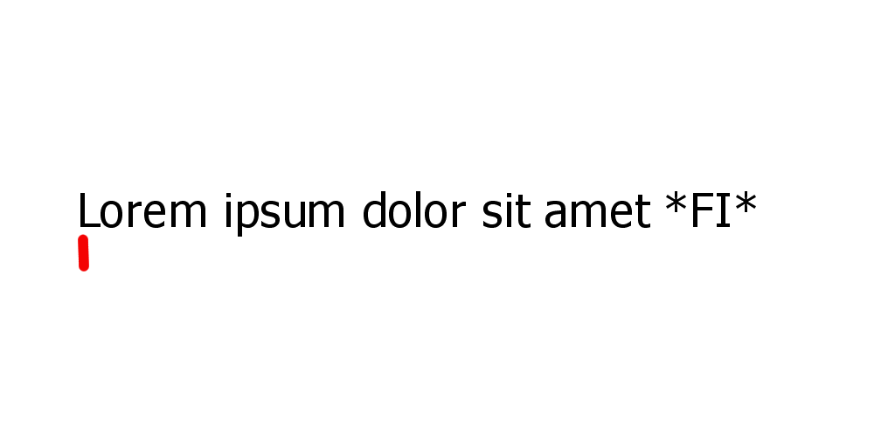

6.3 TREBALL AMB SEQÜÈNCIES
Recorregut
Esquema en pseudocodi:
inicialitzar tractament
llegir element
mentre no fi de la seqüència fer
tractar element actual
llegir element
tractament finalL'esquema equivalent en C++ seria així:
...
const tipus EOS=element_marca_fi;
...
int main(){
...
inicialitzar_tractament(...);
cin>>element; //llegir el primer
//mentre no fi: not element==EOS
while(element != EOS) {
tractar_element(element,...);
cin>>element; //llegir el següent
}
tractament_final(...);
...
return 0;
}Exemples
Comptar la quantitat de nombres parells que hi ha en una seqüència de naturals >0.
//Entrada: una seqüència de nombres naturals >0 acabada en 0
//Sortida: la quantitat de nombres parells menors que n
#include<iostream>
using namespace std;
const unsigned EOS=0;
int main(){
unsigned comptador=0; //inicialització
unsigned element;
cin>>element; //llegir el 1r element
while(element!=EOS){ //mentre no final
//processar l'element
if(element%2==0) comptador++;
cin>>element; //llegir el següent
}
//processament final
cout<<"S'han trobat "<<comptador<<" nombres parells"<<endl;
return 0;
} Comptar el nombre de vegades que apareix una 'a' en un seqüència de caràcters.
//Entrada: una seqüència de caràcters acabada en '#'
//Sortida: la quantitat de caràcters 'a' trobats
#include<iostream>
using namespace std;
const char EOS='#';
unsigned comptar_caracters(char lletra){
//Pre:: cert
//Post: compta el nombre d'aparicions de lletra fins a arribar a EOS
unsigned comptador=0; //inicialització
char element;
cin>>element; //llegir el 1r element
while(element!=EOS){ //mentre no final
if(element==lletra) comptador++; //processar l'element
cin>>element; //llegir el següent
}
return comptador;
}
int main(){
cout<<"Entra una seqüència acabada en '"<<EOS<<"'"<<endl;
cout<<"S'han trobat "<<comptar_caracters('a')<<" caracters 'a'"<<endl;
return 0;
}Cerca
Esquema en pseudocodi:
inicialitzar tractament
llegir element
mentre no fi de la seqüència i no trobat fer
tractar element actual
llegir element
tractament final
L'esquema equivalent en c++ seria així:
...
const tipus EOS=element_marca_fi;
...
int main() {
...
inicialitzar_tractament(trobat,...); //trobat=false
cin>>element; //llegir el primer
//mentre no fi: not(element==EOS or trobat)
while(element != EOS and not trobat) {
tractar_element(element,trobat,...);
if(not trobat)
cin>>element; //llegir el següent
}
tractament_final(trobat,...);
...
return 0;
}Exemples
Donada una seqüència de caràcters, determinar si hi ha una 'z'.
//Entrada: una seqüència de caràcters acabada en '#'
//Sortida: diu si la seqüència té o no una 'z'
#include<iostream>
using namespace std;
const char EOS='#';
bool conte_caracter(char lletra){
//Pre: cert
//Post: retorna cert si s'ha entrat la lletra per teclat, fals altrament
char caracter;
cin>>caracter; //primer element
while(caracter!=EOS and caracter!=lletra) //mentre no final
cin>>caracter; //següent
return caracter!=EOS;
}
int main(){
cout<<"Entra una seqüència de caracters acabada en "<<EOS<<endl;
cout<<"Conté una 'z'? :"<<boolalpha<<conte_caracter('z')<<endl;
return 0;
}Donada una seqüència de naturals (>0), determinar si hi ha algun múltiple de 7.
//Entrada: una seqüència de naturals acabada en 0
//Sortida: diu si la seqüència té o no un múltiple de 7
#include<iostream>
using namespace std;
const unsigned EOS=0;
bool conte_un_multiple(unsigned divisor){
//Pre: divisor>0
//Post: retorna cert si es llegeix un múliple de divisor !=EOS, fals altrament
unsigned nombre;
cin>>nombre; //primer element
while(nombre!=EOS and nombre%divisor!=0) //mentre no fi
cin>>nombre; //següent
return nombre!=EOS;
}
int main(){
cout<<"Entra una seqüència de naturals acabada en "<<EOS<<endl;
cout<<"Conté un multiple de 7? "<<boolalpha<<conte_un_multiple(7)<<endl;
return 0;
}Comptar el nombre de caràcters anteriors a la primera 'a' en un text. Si no hi ha cap 'a', fer-ho explícit.
//Entrada: una seqüència de caràcters acabada en #
//Sortida: diu el nombre de caràcters d'abans de la primera 'a'
#include<iostream>
using namespace std;
const char EOS='#';
int comptar_abans_aparicio(char lletra){
//Pre: lletra != ws
//Post: retorna el nombre de caràcters d'abans de llegir lletra o -1 si no es llegeix.
unsigned comptador=0; //inicialització
char element;
cin>>element; //primer element
while(element!=EOS and element!=lletra){ //mentre no fi
comptador++; //processar element
cin>>element; //següent
}
if(element==EOS) comptador=-1;
return comptador;
}
int main(){
cout<<"Entra una seqüència acabada en "<<EOS<<endl;
int comptador=comptar_abans_aparicio('a');
if(comptador==-1) cout<<"No s'ha trobat cap 'a'"<<endl;
else cout<<"S'han llegit "<<comptador<<" caràcters abans de la primera 'a'"<<endl;
return 0;
}